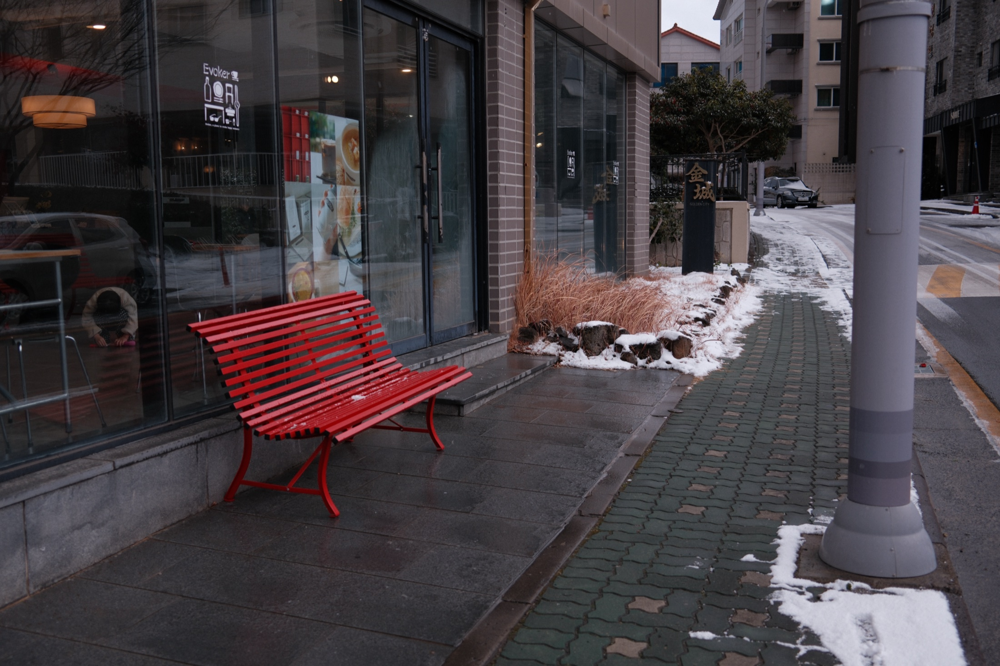
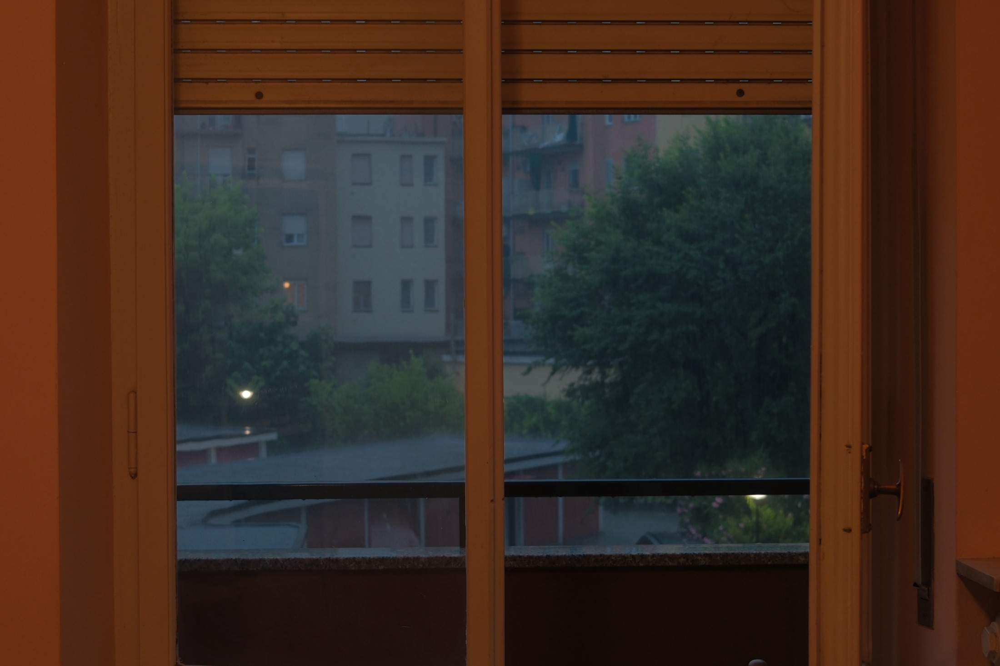
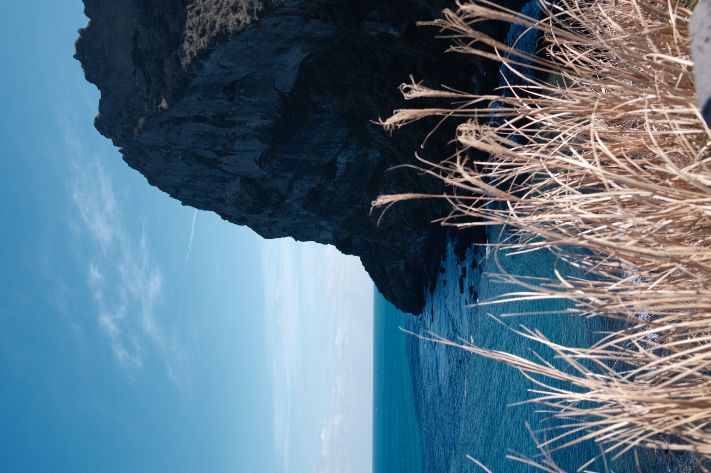
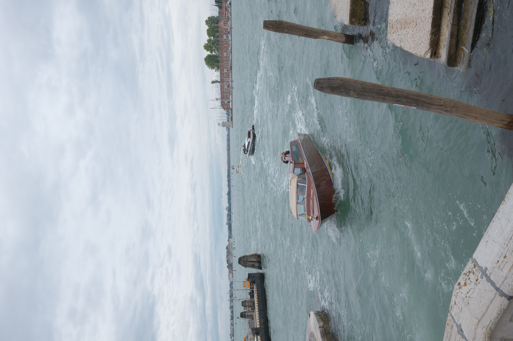

signage, glass, traffic, artificial light
Photo essay / inherited places
The City Left Behind

(Statement)
A city becomes old when the new layer forgets it is a layer.
The city does not disappear. It is covered by signs, glass, tourism, weather, events, and rooms that remember bodies after they leave. This portfolio follows five entries into one atmosphere: modern surfaces pressing against inherited places.
windows, chairs, rooms, domestic distance
events, tourism, water, images made for looking
Selected works /
(Places)
01
Milan
ancient facade / modern event / city traffic
View collection
02
Home
window / interior silence / private distance
View collection
03
Event
biennale scene / looking / staged desire
View collection
04
Korean Jeju
coast / tourism / interrupted nature
View collection
05
Venice
water memory / biennale image / old city staged
View collection
(Pixel film)
The City Left Behind / final moving image